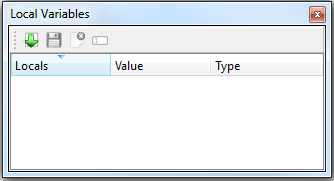

Local Variables¶
This toolbox has in principal the same function than the global variables toolbox. The only difference is that local variables are variables which are locally defined in a method. So this toolbox is useful during the debugging mode to watch the current value of the local variables after each step.